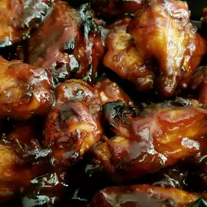

Mahogany Chicken Wings

Description
These sweet, succulent wings look as delicious as they taste!
Ingredients
- 3 pounds chicken wings, split and tips discarded
- ½ cup soy sauce
- ½ cup honey
- ¼ cup molasses
- 2 tablespoons chile sauce
- 1 teaspoon ground ginger
- 2 cloves garlic, finely chopped
Steps
- Place chicken in a shallow, medium dish.
- In a medium bowl, mix soy sauce, honey, molasses, chile sauce, ground ginger and garlic. Pour the mixture over the chicken. Cover and refrigerate approximately 1 hour, turning occasionally.
- Preheat oven to 375 degrees F (190 degrees C).
- In a large baking dish, arrange chicken in a single layer. Bake in the preheated oven approximately 50 minutes, brushing with remaining soy sauce mixture often and turning once, until meat is no longer pink and juices run clear.